Code
suppressPackageStartupMessages(suppressWarnings({
library(SummarizedExperiment)
library(GenomicRanges)
library(gUtils)
library(rtracklayer)
library(EnrichedHeatmap)
library(ComplexHeatmap)
library(circlize)
}))Heatmap() and HeatmapAnnotation()In this exercise, we shall use methods from the gUtils library. It provides a set of utility functions for use with GenomicRanges. We need to install it properly in the current environment following the author’s instructions.
suppressPackageStartupMessages(suppressWarnings({
library(SummarizedExperiment)
library(GenomicRanges)
library(gUtils)
library(rtracklayer)
library(EnrichedHeatmap)
library(ComplexHeatmap)
library(circlize)
}))SummarizedExperimentHere we load the SummarizedExperiment for the ATAC-seq data
atac <- readRDS("data/atac_se.rds")Each peak region represent the activity in a genomic region. These peaks are annotated for various features, including their genomic annotations and the results for differential accessibility analysis is also added there.
rd_atac <- rowRanges(atac)
rd_atacGRanges object with 3656 ranges and 18 metadata columns:
seqnames ranges strand | annotation geneChr
<Rle> <IRanges> <Rle> | <character> <integer>
[1] chr1 3670547-3672665 * | Promoter (<=1kb) 1
[2] chr1 4332510-4332710 * | Intron (ENSMUST00000.. 1
[3] chr1 4491755-4492573 * | Promoter (1-2kb) 1
[4] chr1 4571186-4572423 * | Distal Intergenic 1
[5] chr1 4785062-4786325 * | Promoter (<=1kb) 1
... ... ... ... . ... ...
[3652] chr2 181764664-181764891 * | Promoter (1-2kb) 2
[3653] chr2 181766881-181767875 * | Promoter (<=1kb) 2
[3654] chr2 181837244-181838655 * | Promoter (<=1kb) 2
[3655] chr2 181863853-181865066 * | Promoter (<=1kb) 2
[3656] chr2 181918525-181918853 * | Distal Intergenic 2
geneStart geneEnd geneLength geneStrand geneId
<integer> <integer> <integer> <integer> <character>
[1] 3214482 3671498 457017 2 497097
[2] 4344146 4360314 16169 2 19888
[3] 4492465 4493735 1271 2 20671
[4] 4491390 4497354 5965 2 20671
[5] 4773206 4785710 12505 2 27395
... ... ... ... ... ...
[3652] 181763332 181827797 64466 1 17932
[3653] 181767029 181795892 28864 1 17932
[3654] 181837854 181857461 19608 1 245867
[3655] 181864337 181870830 6494 1 67005
[3656] 181864360 181866209 1850 1 67005
transcriptId distanceToTSS ENSEMBL SYMBOL
<character> <numeric> <character> <character>
[1] ENSMUST00000070533.4 0 ENSMUSG00000051951 Xkr4
[2] ENSMUST00000027032.5 27604 ENSMUSG00000025900 Rp1
[3] ENSMUST00000191939.1 1162 ENSMUSG00000025902 Sox17
[4] ENSMUST00000192650.5 -73832 ENSMUSG00000025902 Sox17
[5] ENSMUST00000130201.7 0 ENSMUSG00000033845 Mrpl15
... ... ... ... ...
[3652] ENSMUST00000081125.10 1332 ENSMUSG00000010505 Myt1
[3653] ENSMUST00000156190.7 0 ENSMUSG00000010505 Myt1
[3654] ENSMUST00000029116.13 0 ENSMUSG00000027589 Pcmtd2
[3655] ENSMUST00000039551.8 0 ENSMUSG00000038628 Polr3k
[3656] ENSMUST00000153214.1 54165 ENSMUSG00000038628 Polr3k
GENENAME anno logFC logCPM F
<character> <character> <numeric> <numeric> <numeric>
[1] X-linked Kx blood gr.. Promoter 0.602984 10.45378 41.78446
[2] retinitis pigmentosa.. Intron 0.855748 5.18424 3.68371
[3] SRY (sex determining.. Promoter -0.620926 7.13469 9.14522
[4] SRY (sex determining.. Intergenic -0.511046 8.90885 15.15688
[5] mitochondrial riboso.. Promoter 0.540908 8.63469 15.08892
... ... ... ... ... ...
[3652] myelin transcription.. Promoter -1.275275 5.54135 10.44866
[3653] myelin transcription.. Promoter 0.477658 7.56969 6.03877
[3654] protein-L-isoasparta.. Promoter 0.689247 7.92175 16.67881
[3655] polymerase (RNA) III.. Promoter 0.241693 9.05746 4.06676
[3656] polymerase (RNA) III.. Intergenic 0.394577 6.84745 2.73331
PValue qvalue
<numeric> <numeric>
[1] 6.58453e-08 4.81983e-07
[2] 6.13517e-02 9.28785e-02
[3] 4.12368e-03 8.38540e-03
[4] 3.27158e-04 8.67115e-04
[5] 3.36058e-04 8.82634e-04
... ... ...
[3652] 0.002309221 0.00497558
[3653] 0.017945118 0.03116850
[3654] 0.000181039 0.00051468
[3655] 0.049773014 0.07677364
[3656] 0.105289776 0.15077925
-------
seqinfo: 21 sequences from an unspecified genome; no seqlengthsOnce we have the short sequencing reads in an ATAC-seq experiment, bioinformatics algorithms take over to recreate the biological landscape of the genomic accessibity.
chr1, start: 100, end: 400).Now that we have genomic coordinates for our peaks, we can extract the specific information:
Gene1) and how far the peak is from the Transcription Start Site (distanceTSS).Group1 vs Group2). Statistical software (like DESeq2) then calculates the fold-change (FC) between these counts to determine if a region significantly opened or closed in response to a treatment.Here is the step-by-step bioinformatics pipeline used to generate those exact values from the raw data:
logFC), p-values, and adjusted p-values for every single region.rowRanges: finally, the data is assembled for visualization tools like EnrichedHeatmap, which relies on the Bioconductor ecosystem. The genomic coordinates (chr, start, end) form the core of the rowRanges object, and the statistical results (like the logFC and p-values) are tacked on as metadata columns. This creates a unified object where the visualization tool instantly knows both where the region is located and how significantly its accessibility changed.Based on standard bioinformatics practices, we want to filter for peaks that have a significant statistical change (qvalue) and a meaningful magnitude of change (logFC).
# qvalue is the FDR adjusted P value
#rd_atac <- rd_atac[abs(rd_atac$logFC) >= 0.5 & rd_atac$qvalue <= 0.1]
rd_atac_filtered = subset(rd_atac, abs(logFC) >= .5 & qvalue <= .1)
# Add an "ATAC_" prefix to all the metadata columns in rd_atac_filtered
colnames(elementMetadata(rd_atac_filtered)) <- paste(
"ATAC", colnames(elementMetadata(rd_atac_filtered )), sep = "_")Using the absolute value (abs()) is crucial here. It ensures we are keeping peaks that gained accessibility (logFC ≥ 0.5) AND peaks that lost accessibility (logFC ≤ -0.5). If we didn’t use abs(), we would accidentally throw away all the regions that closed down!
rd_atac_filteredGRanges object with 1933 ranges and 18 metadata columns:
seqnames ranges strand | ATAC_annotation
<Rle> <IRanges> <Rle> | <character>
[1] chr1 3670547-3672665 * | Promoter (<=1kb)
[2] chr1 4332510-4332710 * | Intron (ENSMUST00000..
[3] chr1 4491755-4492573 * | Promoter (1-2kb)
[4] chr1 4571186-4572423 * | Distal Intergenic
[5] chr1 4785062-4786325 * | Promoter (<=1kb)
... ... ... ... . ...
[1929] chr2 181713633-181714134 * | Promoter (<=1kb)
[1930] chr2 181714476-181715931 * | Promoter (<=1kb)
[1931] chr2 181762779-181764180 * | Promoter (<=1kb)
[1932] chr2 181764664-181764891 * | Promoter (1-2kb)
[1933] chr2 181837244-181838655 * | Promoter (<=1kb)
ATAC_geneChr ATAC_geneStart ATAC_geneEnd ATAC_geneLength
<integer> <integer> <integer> <integer>
[1] 1 3214482 3671498 457017
[2] 1 4344146 4360314 16169
[3] 1 4492465 4493735 1271
[4] 1 4491390 4497354 5965
[5] 1 4773206 4785710 12505
... ... ... ... ...
[1929] 2 181715016 181720985 5970
[1930] 2 181715016 181720985 5970
[1931] 2 181763332 181827797 64466
[1932] 2 181763332 181827797 64466
[1933] 2 181837854 181857461 19608
ATAC_geneStrand ATAC_geneId ATAC_transcriptId ATAC_distanceToTSS
<integer> <character> <character> <numeric>
[1] 2 497097 ENSMUST00000070533.4 0
[2] 2 19888 ENSMUST00000027032.5 27604
[3] 2 20671 ENSMUST00000191939.1 1162
[4] 2 20671 ENSMUST00000192650.5 -73832
[5] 2 27395 ENSMUST00000130201.7 0
... ... ... ... ...
[1929] 1 18389 ENSMUST00000071585.9 -882
[1930] 1 18389 ENSMUST00000071585.9 0
[1931] 1 17932 ENSMUST00000081125.10 0
[1932] 1 17932 ENSMUST00000081125.10 1332
[1933] 1 245867 ENSMUST00000029116.13 0
ATAC_ENSEMBL ATAC_SYMBOL ATAC_GENENAME ATAC_anno
<character> <character> <character> <character>
[1] ENSMUSG00000051951 Xkr4 X-linked Kx blood gr.. Promoter
[2] ENSMUSG00000025900 Rp1 retinitis pigmentosa.. Intron
[3] ENSMUSG00000025902 Sox17 SRY (sex determining.. Promoter
[4] ENSMUSG00000025902 Sox17 SRY (sex determining.. Intergenic
[5] ENSMUSG00000033845 Mrpl15 mitochondrial riboso.. Promoter
... ... ... ... ...
[1929] ENSMUSG00000027584 Oprl1 opioid receptor-like 1 Promoter
[1930] ENSMUSG00000027584 Oprl1 opioid receptor-like 1 Promoter
[1931] ENSMUSG00000010505 Myt1 myelin transcription.. Promoter
[1932] ENSMUSG00000010505 Myt1 myelin transcription.. Promoter
[1933] ENSMUSG00000027589 Pcmtd2 protein-L-isoasparta.. Promoter
ATAC_logFC ATAC_logCPM ATAC_F ATAC_PValue ATAC_qvalue
<numeric> <numeric> <numeric> <numeric> <numeric>
[1] 0.602984 10.45378 41.78446 6.58453e-08 4.81983e-07
[2] 0.855748 5.18424 3.68371 6.13517e-02 9.28785e-02
[3] -0.620926 7.13469 9.14522 4.12368e-03 8.38540e-03
[4] -0.511046 8.90885 15.15688 3.27158e-04 8.67115e-04
[5] 0.540908 8.63469 15.08892 3.36058e-04 8.82634e-04
... ... ... ... ... ...
[1929] 1.922716 6.37607 40.6570 8.88771e-08 6.28500e-07
[1930] 1.213349 7.47748 37.2944 2.22741e-07 1.40677e-06
[1931] -2.192918 7.94745 146.4501 1.07660e-15 1.40573e-13
[1932] -1.275275 5.54135 10.4487 2.30922e-03 4.97558e-03
[1933] 0.689247 7.92175 16.6788 1.81039e-04 5.14680e-04
-------
seqinfo: 21 sequences from an unspecified genome; no seqlengthsMost of the peaks are around 1000 bp wide. We can check the distribution with a histogram.
# median(lengths(rd_atac_filtered)) # `lengths` (plural) is an alias for `width`
cat(
"Median peak width in the filtered dataset =",
median(width(rd_atac_filtered)),
'\n')
cat(
"99% percentile in the filtered dataset =",
quantile(width(rd_atac_filtered), .99))
hist(
width(rd_atac_filtered),
breaks = 50,
main = "Distribution of ATAC Peak Widths",
xlab = "Width (bp)",
col = "lightblue",
border = "black")Median peak width in the filtered dataset = 932
99% percentile in the filtered dataset = 1985.88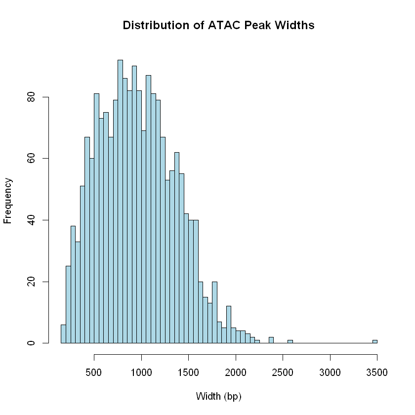
The rows in the SummarizedExperiment represent actual biological features—specifically, regions where the chromatin was physically open (peaks). Indeed, an open chromatin region (like a promoter or enhancer) is naturally a few hundred base pairs wide. However, to compare E11.5 and E15.5, we need to merge the peaks from all samples together to create a unified “master list” (a consensus peak set). When we merge overlapping peaks from multiple different samples, the resulting master regions naturally stretch out, averaging around ~1,000 bp to ensure they cover the entire open zone for all samples.
For plotting the data, we can hence consider 1000 bp around the peak-mid that we find using gr.mid(), which returns the 1-bp center of each peak. It directly overwrites the data inside the ranges column.
# Finding mid of all peaks
mid_peaks <- gr.mid(rd_atac_filtered)
head(mid_peaks, 3)GRanges object with 3 ranges and 18 metadata columns:
seqnames ranges strand | ATAC_annotation ATAC_geneChr
<Rle> <IRanges> <Rle> | <character> <integer>
[1] chr1 3671606 * | Promoter (<=1kb) 1
[2] chr1 4332610 * | Intron (ENSMUST00000.. 1
[3] chr1 4492164 * | Promoter (1-2kb) 1
ATAC_geneStart ATAC_geneEnd ATAC_geneLength ATAC_geneStrand ATAC_geneId
<integer> <integer> <integer> <integer> <character>
[1] 3214482 3671498 457017 2 497097
[2] 4344146 4360314 16169 2 19888
[3] 4492465 4493735 1271 2 20671
ATAC_transcriptId ATAC_distanceToTSS ATAC_ENSEMBL ATAC_SYMBOL
<character> <numeric> <character> <character>
[1] ENSMUST00000070533.4 0 ENSMUSG00000051951 Xkr4
[2] ENSMUST00000027032.5 27604 ENSMUSG00000025900 Rp1
[3] ENSMUST00000191939.1 1162 ENSMUSG00000025902 Sox17
ATAC_GENENAME ATAC_anno ATAC_logFC ATAC_logCPM ATAC_F
<character> <character> <numeric> <numeric> <numeric>
[1] X-linked Kx blood gr.. Promoter 0.602984 10.45378 41.78446
[2] retinitis pigmentosa.. Intron 0.855748 5.18424 3.68371
[3] SRY (sex determining.. Promoter -0.620926 7.13469 9.14522
ATAC_PValue ATAC_qvalue
<numeric> <numeric>
[1] 6.58453e-08 4.81983e-07
[2] 6.13517e-02 9.28785e-02
[3] 4.12368e-03 8.38540e-03
-------
seqinfo: 21 sequences from an unspecified genome; no seqlengthsresize()There actually is a native way to do this in standard GenomicRanges, but it doesn’t have a dedicated midpoint name. Instead, Bioconductor relies on its highly versatile resize() function.
# Finding mid of all peaks
mid_peaks <- resize(rd_atac_filtered, width = 1, fix = "center")
# adding names to peaks to give them identity
names(mid_peaks) <- paste("peak", 1:length(mid_peaks), sep = "_")
head(mid_peaks, 3)GRanges object with 3 ranges and 18 metadata columns:
seqnames ranges strand | ATAC_annotation ATAC_geneChr
<Rle> <IRanges> <Rle> | <character> <integer>
peak_1 chr1 3671606 * | Promoter (<=1kb) 1
peak_2 chr1 4332610 * | Intron (ENSMUST00000.. 1
peak_3 chr1 4492164 * | Promoter (1-2kb) 1
ATAC_geneStart ATAC_geneEnd ATAC_geneLength ATAC_geneStrand
<integer> <integer> <integer> <integer>
peak_1 3214482 3671498 457017 2
peak_2 4344146 4360314 16169 2
peak_3 4492465 4493735 1271 2
ATAC_geneId ATAC_transcriptId ATAC_distanceToTSS ATAC_ENSEMBL
<character> <character> <numeric> <character>
peak_1 497097 ENSMUST00000070533.4 0 ENSMUSG00000051951
peak_2 19888 ENSMUST00000027032.5 27604 ENSMUSG00000025900
peak_3 20671 ENSMUST00000191939.1 1162 ENSMUSG00000025902
ATAC_SYMBOL ATAC_GENENAME ATAC_anno ATAC_logFC ATAC_logCPM
<character> <character> <character> <numeric> <numeric>
peak_1 Xkr4 X-linked Kx blood gr.. Promoter 0.602984 10.45378
peak_2 Rp1 retinitis pigmentosa.. Intron 0.855748 5.18424
peak_3 Sox17 SRY (sex determining.. Promoter -0.620926 7.13469
ATAC_F ATAC_PValue ATAC_qvalue
<numeric> <numeric> <numeric>
peak_1 41.78446 6.58453e-08 4.81983e-07
peak_2 3.68371 6.13517e-02 9.28785e-02
peak_3 9.14522 4.12368e-03 8.38540e-03
-------
seqinfo: 21 sequences from an unspecified genome; no seqlengthsAs we saw in the previous notebook, a GRanges object is not a standard data frame. It strictly separates its data into two distinct parts: Core Geometry and Metadata . Because GRanges is an object-oriented structure (S4), we have to use specific “accessor” functions to extract the core geometry.
# Returns an IRanges object with start, end, and width
ranges(mid_peaks)IRanges object with 1933 ranges and 0 metadata columns:
start end width
<integer> <integer> <integer>
peak_1 3671606 3671606 1
peak_2 4332610 4332610 1
peak_3 4492164 4492164 1
peak_4 4571804 4571804 1
peak_5 4785693 4785693 1
... ... ... ...
peak_1929 181713883 181713883 1
peak_1930 181715203 181715203 1
peak_1931 181763479 181763479 1
peak_1932 181764777 181764777 1
peak_1933 181837949 181837949 1Note: Because GRanges is an S4 object, its core architecture is rigidly locked. we physically cannot add a custom geometry column (like midpeak) next to start and end. The rules of the object state that a GRanges row can only represent exactly one genomic interval at a time.
The SE aggregates the data into one single number per peak. All spatial information is destroyed. It cannot tell us if those 500 reads were tightly piled up exactly in the middle, or spread out evenly across the region.
A bigWig file contains the continuous, base-pair-by-base-pair signal coverage across the entire genome. To draw an EnrichedHeatmap, we don’t want just one flat color for the whole peak. We want to see the actual biological shape of the chromatin accessibility (e.g., a sharp spike at the center, tapering off 1000 bp away).
bigWig files are compressed, indexed, binary format used for efficiently displaying continuous data, like genomic signal data, in genome browsers. Here, we read in ATAC-seq bigWig files, filters the data to specific chromosomes, normalizes signal intensity around genomic regions of interest (peak centers), and saves the resulting matrices for downstream visualization.
# Find all files in the "data" folder that contain "ATAC" in their name.
# full.names = TRUE ensures we get the full file path (e.g., "data/ATAC_11half.bw")
atac_files <- list.files("data", pattern = "ATAC", full.names = TRUE)
# Clean up the filenames to use as names for our list; basename() extracts just the filename
# from the path; gsub() replaces the ".bw" extension with nothing (""), leaving a clean name.
names(atac_files) <- gsub(pattern = "\\.bw", replacement = "", x = basename(atac_files))
# Loop over every file in our list using lapply()
atac_bw <- lapply(atac_files, function(x){
# Read the bigWig file from the hard drive into R as a GRanges object
a <- rtracklayer::import(x)
# Filter the GRanges object to ONLY keep data mapping to chr1 or chr2
a <- a[seqnames(a) %in% c("chr1", "chr2")]
# Return the filtered GRanges object to be saved in the atac_bw list
return(a)
})Here, we load the entire .bw file into memory using rtracklayer::import(x) and then filter it down to chr1 and chr2. However, real-world whole-genome bigWig files can be massive and will crash a standard computer’s RAM. To do this efficiently, we can pass a Ranges object to the which= argument of the import() function, for example, import(x, which = my_regions). This forces R to dynamically extract only the data for those specific coordinates directly from the hard drive, saving huge amounts of memory and time.
atac_bw <- lapply(atac_files, function(x){
# Peek at the file's index to get the lengths of the chromosomes
bw_file <- rtracklayer::BigWigFile(x)
genome_info <- seqinfo(bw_file)
# Create a GRanges object representing the full length of chr1 and chr2
# as() converts the Seqinfo object directly into a GRanges object spanning the chromosomes
target_chrs <- as(genome_info[c("chr1", "chr2")], "GRanges")
# Read ONLY chr1 and chr2 from the hard drive
a <- rtracklayer::import(x, which = target_chrs)
return(a)
})Since the only reason we are loading this data is to draw a heatmap spanning 1000 bp up/downstream of our mid_peaks, we don’t even need the rest of chr1 and chr2. We can use our mid_peaks object to fetch only the exact 2000 bp windows we need, reducing the memory footprint from millions of rows per sample down to just a tiny fraction of that.
# Define the actual 2000 bp windows we need for the heatmap
heatmap_windows <- resize(mid_peaks, width = 2000, fix = "center")
atac_bw <- lapply(atac_files, function(x){
# Read ONLY the 2000 bp windows around our peaks from the hard drive
a <- rtracklayer::import(x, which = heatmap_windows)
return(a)
})When imported into R, each individual bigWig file is represented as a GRanges object. Because we loaded multiple files at once, our atac_bw variable is a list of GRanges objects.
atac_bw$ATAC_11half
GRanges object with 72531 ranges and 1 metadata column:
seqnames ranges strand | score
<Rle> <IRanges> <Rle> | <numeric>
[1] chr1 3670606-3670650 * | 0.195004
[2] chr1 3670651-3670700 * | 0.176254
[3] chr1 3670701-3670750 * | 0.168754
[4] chr1 3670751-3670800 * | 0.303756
[5] chr1 3670801-3670850 * | 0.382508
... ... ... ... . ...
[72527] chr2 181838651-181838700 * | 0.0262506
[72528] chr2 181838701-181838750 * | 0.0000000
[72529] chr2 181838751-181838800 * | 0.0412509
[72530] chr2 181838801-181838850 * | 0.0450010
[72531] chr2 181838851-181838948 * | 0.0112502
-------
seqinfo: 66 sequences from an unspecified genome
$ATAC_15half
GRanges object with 72127 ranges and 1 metadata column:
seqnames ranges strand | score
<Rle> <IRanges> <Rle> | <numeric>
[1] chr1 3670606-3670650 * | 0.853376
[2] chr1 3670651-3670700 * | 0.861825
[3] chr1 3670701-3670750 * | 0.828028
[4] chr1 3670751-3670800 * | 1.064610
[5] chr1 3670801-3670850 * | 1.030810
... ... ... ... . ...
[72123] chr2 181838701-181838750 * | 0.00844927
[72124] chr2 181838751-181838800 * | 0.07604340
[72125] chr2 181838801-181838850 * | 0.14363800
[72126] chr2 181838851-181838900 * | 0.12673900
[72127] chr2 181838901-181838948 * | 0.08449270
-------
seqinfo: 66 sequences from an unspecified genomecat(
"Median width = ",
median(width(atac_bw$ATAC_11half))
)Median width = 50Unlike the SE peaks, the rows in a bigWig file are artificial mathematical bins, not biological features.
To compress the file, the genome is artificially chopped into an invisible grid of 50 bp windows, likely using a tool like deepTools bamCoverage with a command like --binSize 50. The software calculates the average signal for that 50 bp window and saves it as a single chunk.
Note that there are some exceptions. bigWig uses a compression trick called “run-length encoding.” If two consecutive 50 bp bins happen to have the exact same signal score, the bigWig file merges them into a single 100 bp row. And if a bin is completely empty (zero reads), it is completely deleted from the file to save space, which can cause the surrounding bins to look chopped or offset.
Next, we calculate the normalized signals into the area of interest.
In EnrichedHeatmap, the genomic region is chopped up into tiny windows (bins). The algorithm needs to calculate a single “average” signal for each bin. Because bigWig files are highly compressed, they completely omit regions that have zero reads.
For example, if a 20 bp bin has a signal of 10 covering 5 base pairs, and the bigWig file is “missing” data for the other 15 base pairs, w0 correctly assumes the missing data is zero. The mean_mode = "w0" calculates the weighted average as: (10 × 5bp) + (0 × 15bp) / 20bp = 2.5.
If we used a different mode, the algorithm might ignore the missing data and claim the average signal is 10, artificially inflating the signal!
And because the 99th percentile of our ATAC peak widths is approximately 2000 bp, we extend our analysis window by 1 kb upstream and 1 kb downstream (extend = 1000) from the peak center. This 2 kb total window ensures that the complete biological signal for 99% of our regions is fully captured in the heatmap without clipping the edges.
Please check ?normalizeToMatrix or the official documentation for details of this function.
mat_AS <- lapply(atac_bw, FUN = function(x) {
normalizeToMatrix(
x, mid_peaks, # bigWig data, and target "anchor" (point 0)
mean_mode = "w0",
extend = 1000,
value_column = "score",
include_target = TRUE, # includes the 1 bp anchor itself
w = 20, # window size
smooth = T, # LOESS smoothing curve
background = 0
)
})Warning message:
"Width of `target` are all 1, `include_target` is set to `FALSE`."
Warning message:
"Width of `target` are all 1, `include_target` is set to `FALSE`."We imported two bigWig files, “ATAC_11half.bw” (E11.5) and “ATAC_15half.bw” (E15.5), therefore the list returned by lapply() will have exactly two matrix elements.
str(mat_AS)List of 2
$ ATAC_11half: 'normalizedMatrix' num [1:1933, 1:100] 0.2039 0.1108 0.0247 0.0473 0.052 ...
..- attr(*, "upstream_index")= int [1:50] 1 2 3 4 5 6 7 8 9 10 ...
..- attr(*, "target_index")= int(0)
..- attr(*, "downstream_index")= int [1:50] 51 52 53 54 55 56 57 58 59 60 ...
..- attr(*, "extend")= num [1:2] 1000 1000
..- attr(*, "smooth")= logi TRUE
..- attr(*, "signal_name")= chr "x"
..- attr(*, "target_name")= chr "mid_peaks"
..- attr(*, "target_is_single_point")= logi TRUE
..- attr(*, "background")= num 0
..- attr(*, "signal_is_categorical")= logi FALSE
..- attr(*, "dimnames")=List of 2
.. ..$ : chr [1:1933] "peak_1" "peak_2" "peak_3" "peak_4" ...
.. ..$ : chr [1:100] "u1" "u2" "u3" "u4" ...
$ ATAC_15half: 'normalizedMatrix' num [1:1933, 1:100] 0.8644 0 0.0242 0.0978 0.2013 ...
..- attr(*, "upstream_index")= int [1:50] 1 2 3 4 5 6 7 8 9 10 ...
..- attr(*, "target_index")= int(0)
..- attr(*, "downstream_index")= int [1:50] 51 52 53 54 55 56 57 58 59 60 ...
..- attr(*, "extend")= num [1:2] 1000 1000
..- attr(*, "smooth")= logi TRUE
..- attr(*, "signal_name")= chr "x"
..- attr(*, "target_name")= chr "mid_peaks"
..- attr(*, "target_is_single_point")= logi TRUE
..- attr(*, "background")= num 0
..- attr(*, "signal_is_categorical")= logi FALSE
..- attr(*, "dimnames")=List of 2
.. ..$ : chr [1:1933] "peak_1" "peak_2" "peak_3" "peak_4" ...
.. ..$ : chr [1:100] "u1" "u2" "u3" "u4" ...Inside each slot of that list is a special matrix (officially called a normalizedMatrix object by the EnrichedHeatmap package).
If we look at one of these matrices, its structure represents the physical heatmap grid:
w0 weighted average signal scores for that specific peak at that specific 20 bp window.cat(
"Number of columns in the matrix =",
ncol(mat_AS[[1]]))
mat_AS[[1]][1:5,]Number of columns in the matrix = 100| u1 | u2 | u3 | u4 | u5 | u6 | u7 | u8 | u9 | u10 | ⋯ | d41 | d42 | d43 | d44 | d45 | d46 | d47 | d48 | d49 | d50 | |
|---|---|---|---|---|---|---|---|---|---|---|---|---|---|---|---|---|---|---|---|---|---|
| peak_1 | 0.20391640 | 0.18583284 | 0.17312667 | 0.16737224 | 0.16941623 | 0.18042519 | 0.20300228 | 0.24247351 | 0.29484653 | 0.34114865 | ⋯ | 0.28528416 | 0.28480520 | 0.28051096 | 0.26638482 | 0.24197160 | 0.21592004 | 0.19751312 | 0.18743269 | 0.18235406 | 0.18250567 |
| peak_2 | 0.11075053 | 0.11270090 | 0.11794239 | 0.12587906 | 0.13700781 | 0.15072181 | 0.16385224 | 0.17533363 | 0.18697343 | 0.19716040 | ⋯ | 0.01560486 | 0.01839048 | 0.02055810 | 0.02093967 | 0.01979648 | 0.01890982 | 0.01998151 | 0.02306990 | 0.02744598 | 0.03305126 |
| peak_3 | 0.02466337 | 0.02390869 | 0.02419351 | 0.02498987 | 0.02670886 | 0.02886237 | 0.02879268 | 0.02385193 | 0.01557342 | 0.00883822 | ⋯ | 0.06165051 | 0.06605846 | 0.07387311 | 0.08239089 | 0.09054530 | 0.09771236 | 0.10280547 | 0.10585338 | 0.10739668 | 0.10751231 |
| peak_4 | 0.04730565 | 0.04142725 | 0.03701785 | 0.03425858 | 0.03308943 | 0.03368945 | 0.03680017 | 0.04456340 | 0.05698125 | 0.06851178 | ⋯ | 0.05316178 | 0.05338941 | 0.05393588 | 0.04992478 | 0.03896417 | 0.02690845 | 0.02113386 | 0.02262912 | 0.02938680 | 0.04203021 |
| peak_5 | 0.05196178 | 0.04576406 | 0.04102784 | 0.03792034 | 0.03699727 | 0.03845374 | 0.04159470 | 0.04601885 | 0.05070099 | 0.05329336 | ⋯ | 0.04782777 | 0.05779710 | 0.06783214 | 0.07275033 | 0.07137142 | 0.06776543 | 0.06608353 | 0.06683995 | 0.06893116 | 0.07278543 |
In conclusion, the process started with a BAM file which massive file contains every single/individual DNA fragment the sequencer read, mapped to exact coordinates on the genome.
To make the data manageable, bioinformatics tools “flatten” the BAM file as a continuous pile-up of fragments. Instead of tracking every single fragment, they just walk down the genome and count: “How many fragments are piled up at base 1? At base 2?”
We can’t plot the entire genome in one heatmap. So, the normalizeToMatrix() function acts like a cookie-cutter. It goes into the bigWig file, cuts out the 2000 bp region around every single ATAC peak, and aligns them all perfectly by their center point. Then, it chops those regions into 20-bp bins to create a clean mathematical grid.
Enriched heatmap is a special type of heatmap which visualizes the enrichment of genomic signals over specific target regions.
(
EnrichedHeatmap(mat = mat_AS$ATAC_11half, name = "E11.5")
+ # joining of different EnrichedHeatmaps
EnrichedHeatmap(mat = mat_AS$ATAC_15half, name = "E15.5")
)The automatically generated colors map from the 1^st and 99^th of the
values in the matrix. There are outliers in the matrix whose patterns
might be hidden by this color mapping. You can manually set the color
to `col` argument.
Use `suppressMessages()` to turn off this message.
The automatically generated colors map from the 1^st and 99^th of the
values in the matrix. There are outliers in the matrix whose patterns
might be hidden by this color mapping. You can manually set the color
to `col` argument.
Use `suppressMessages()` to turn off this message.
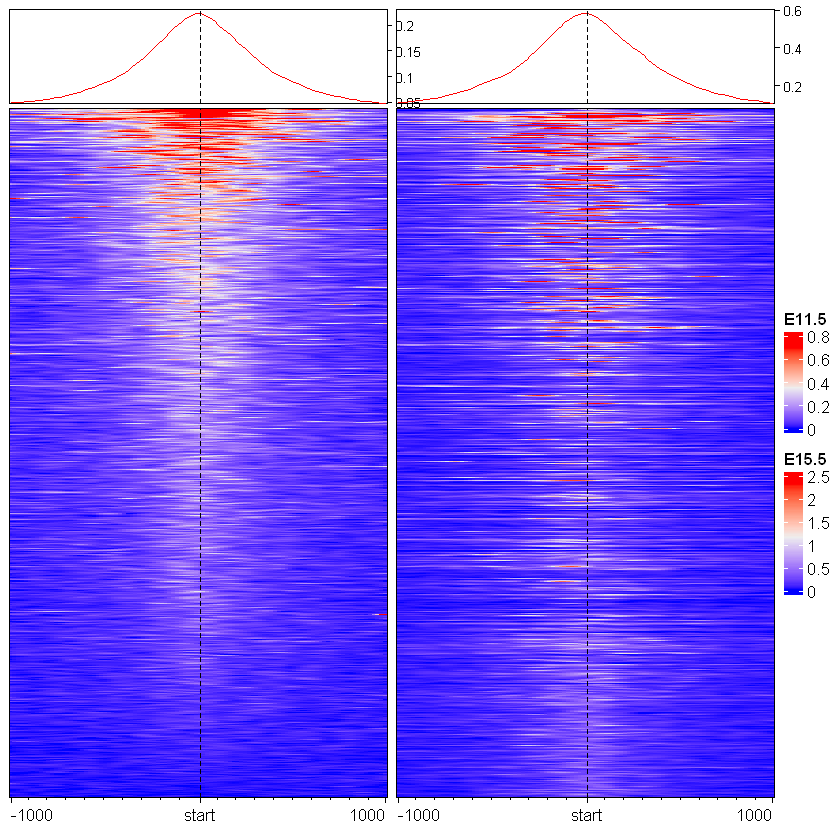
Notice the warning message above about the 1st and 99th percentiles? Most normal ATAC peaks might have a “coverage score” of around 20 to 100 reads. However, the genome contains a few “extreme” regions (often repeats, artifacts, or super-enhancers) that pull in thousands of reads.
By default, EnrichedHeatmap assigns the darkest red color to the absolute highest number in our entire matrix.
EnrichedHeatmap(
mat = mat_AS$ATAC_11half, # normalized matrix
name = "E11.5", # Name for the plot
# col = c("yellow", "black"), # Colors for low to high values
col = c("#ffffff", "black"), # Colors for low to high values
width = unit(4, "cm"), # Width of the heatmap
height = unit(8, "cm") # Height of the heatmap
)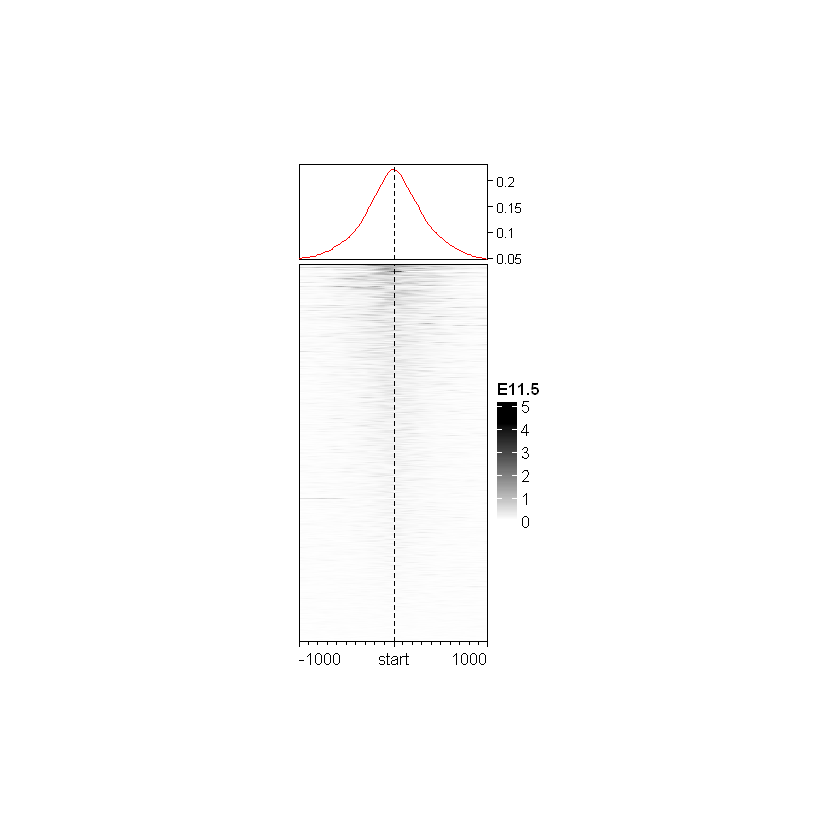
Because that maximum number is so ridiculously high, the color scale is stretched too far. All of our normal, biologically real peaks (the 20-100 values) get squashed into the bottom 1% of the color scale, making the entire plot look washed out and white.
We can fix it by capping the color scale at the 99th percentile. Instead of letting a few extreme peaks with 5,000 reads wash out the color scale, we cap the darkest red at 100 reads. Any region with more than 100 reads is just colored dark red, revealing the contrast in our normal peaks.
# Taking data between 1 and 99 percentile
col_fun <- colorRamp2(
quantile(mat_AS$ATAC_11half, c(0.01, 0.99)),
c("white", "red"))
EnrichedHeatmap(
mat = mat_AS$ATAC_11half,
name = "E11.5",
col = col_fun,
width = unit(4, "cm"),
height = unit(8, "cm")
)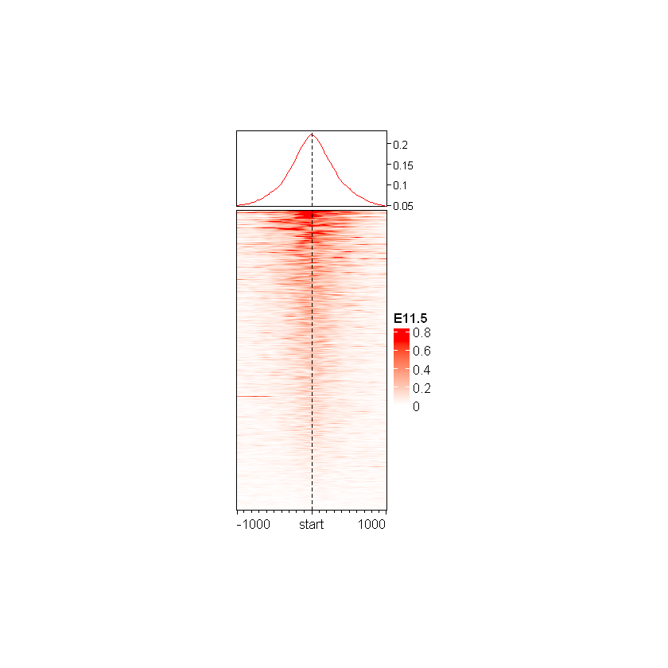
There are two main reasons why the dark red signal is shifted to the left (upstream) and isn’t perfectly anchored at the mid line:
gr.mid() to find the exact mathematical center of the peaks. However, rd_atac is a consensus peak list (meaning peaks from E11.5 and E15.5 were merged together to make a unified map). If we merge two overlapping peaks, the mathematical midpoint of that new giant region is usually not the same as the biological summit (the spot with the highest read pile-up) for our specific sample. For the E11.5 sample, the actual “hottest” part of the open chromatin just happened to be on the left side of that merged mathematical window.Now that we have fixed our color scale, we can upgrade the rest of the plot from a default visual into a publication-ready figure. In the code block below, we are applying several aesthetic tweaks to make the data much easier to read:
heatmap_legend_param): instead of letting R guess the legend ticks, we mathematically calculate the 1st percentile, the 99th percentile, and the exact midpoint. We then force the legend to display only these three clean, rounded numbers.axis_name): we replace the default mathematical bin coordinates with clear biological labels (-1kb, mid, 1kb).top_annotation): we add a line plot to the very top of the heatmap using anno_enriched(). This incredibly useful annotation displays the average signal across all peaks, giving us a quick bird’s-eye view of the chromatin accessibility profile.Note that when creating complex figures like heatmaps in a Jupyter Notebook, we might notice that the output sometimes looks squashed, the text overlaps, or the legends get cut off at the edges. This happens because Jupyter has a default, invisible “canvas” size (usually 7×7 inches) that it uses to draw all plots. Because ComplexHeatmap is an advanced package designed for publication, it tries to draw elements using strict physical dimensions (e.g., forcing a column to be exactly 3 mm wide). If the total size of our heatmap doesn’t match Jupyter’s default 7x7 canvas, the final image gets distorted to make it fit. To fix this, we can explicitly tell the notebook’s plotting engine to change the size of the “paper” it is drawing on to perfectly frame our heatmap.
# Change Jupyter's global canvas size (measured in inches)
options(repr.plot.width = 3.5, repr.plot.height = 4.5)# We first change the color legend to display only 3 values
vmin <- as.numeric(quantile(mat_AS$ATAC_11half, c(0.01)))
vmax <- as.numeric(quantile(mat_AS$ATAC_11half, c(0.99)))
vmid <- (vmin + vmax) / 2
legend_ticks <- c(vmin, vmid, vmax)
EnrichedHeatmap(
mat = mat_AS$ATAC_11half,
name = "E11.5",
col = col_fun, # re-use the previous custom colormap
width = unit(4, "cm"),
height = unit(8, "cm"),
column_title = "E11.5",
column_title_gp = gpar( # 'gp' and `gpar` for graphic parameter
fontsize = 12,
fill = "#ffcccc"),
axis_name = c("-1kb", "mid", "1kb"),
heatmap_legend_param = list(
at = legend_ticks,
labels = round(legend_ticks, digits = 1),
title_gp = gpar(fontsize = 8),
labels_gp = gpar(fontsize = 7)
),
top_annotation = HeatmapAnnotation(
lines = anno_enriched(
height = unit(2, "cm"),
gp = gpar(
lwd = 0.7,
fontsize = 5),
axis_param = list(
side = "right",
facing = "inside",
gp = gpar(
fontsize = 7,
col = "black",
lwd = 0.4
)
)
)
)
)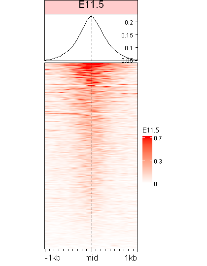
Right now, all of our ATAC peaks are bundled together. While we can clearly see a general peak of accessibility at the center, this single block hides the dynamic changes occurring between our experimental conditions.
To get a better understanding of the biology, we will use our logFC values to split the heatmap into two distinct clusters: regions that gained accessibility and regions that lost accessibility. This allows us to visually confirm our statistical results and track how different parts of the genome behave.
split_change <- ifelse(
mid_peaks$ATAC_logFC > 0,
yes = "Increased accessibility", # TRUE
no = "Decreased accessibility")
names(split_change) <- names(mid_peaks)
str(split_change) Named chr [1:1933] "Increased accessibility" "Increased accessibility" ...
- attr(*, "names")= chr [1:1933] "peak_1" "peak_2" "peak_3" "peak_4" ...# Define cluster colors
cluster_colors <- c(
"Increased accessibility" = "red",
"Decreased accessibility" = "blue")
# Make sure split_change has levels matching the color names
split_change <- factor(
split_change,
levels = names(cluster_colors))
EnrichedHeatmap(
mat = mat_AS$ATAC_11half,
name = "E11.5",
row_split = split_change,
col = col_fun,
width = unit(4, "cm"),
height = unit(8, "cm"),
column_title = "E11.5",
column_title_gp = gpar(
fontsize = 10,
fill = "#ffcccc"),
axis_name = c("-1kb", "mid", "1kb"),
heatmap_legend_param = list(
at = legend_ticks,
labels = round(legend_ticks, digits = 1),
title_gp = gpar(fontsize = 8),
labels_gp = gpar(fontsize = 7)
),
top_annotation = HeatmapAnnotation(
lines = anno_enriched(
gp = gpar(col = cluster_colors),
height = unit(2, "cm"),
axis_param = list(
side = "right",
facing = "inside",
gp = gpar(
fontsize = 7,
lwd = 0.4
)
)
)
)
)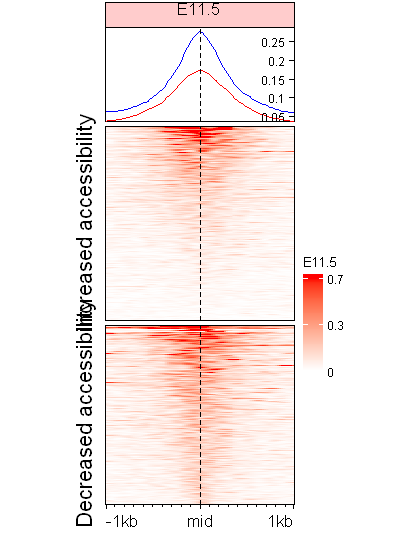
ComplexHeatmap is very smart, but if the data order doesn’t match our color order, the package can sometimes get confused when building the row annotations and legends.
By default, if we give R raw text, it will almost always sort it alphabetically. Because “Decreased” starts with D and “Increased” starts with I, R’s default behavior is to put “Decreased accessibility” at the very top of the heatmap and legend.
The factor() function takes raw text and converts it into a strict categorical variable. If we simply passed the raw text, R would automatically do this conversion for us under the hood, but it would blindly sort the categories alphabetically (putting ‘Decreased’ before ‘Increased’)
By manually setting levels = names(cluster_colors), we prevent R from guessing the layout. We are telling R that the strict, permanent order of these categories is exactly the order we defined in our color list. We explicitly used factor() to override the alphabet and force ‘Increased’ to the top of our heatmap.
Because we have multiple samples to analyze, copying and pasting that massive block of plotting code is inefficient. Instead, it is best practice to wrap our code into a custom function so we can easily generate matching heatmaps for any dataset.
make_EH <- function(
norm_mat,
hm_name,
split_rows = NULL,
heatmap_cols = c("white", "red"),
col_fill = "#ffcccc",
line_colors = cluster_colors) {
# 1. Define color scale based on 1st and 99th percentiles
col_fun <- colorRamp2(
quantile(norm_mat, c(0.01, 0.99)),
heatmap_cols)
# 2. Calculate ticks for the legend
vmin <- as.numeric(quantile(norm_mat, c(0.01)))
vmax <- as.numeric(quantile(norm_mat, c(0.99)))
vmid <- (vmin + vmax) / 2
legend_ticks <- c(vmin, vmid, vmax)
# 3. Generate and return the heatmap
EnrichedHeatmap(
mat = norm_mat,
name = hm_name,
row_split = split_rows,
col = col_fun,
width = unit(4, "cm"),
height = unit(8, "cm"),
column_title = hm_name,
column_title_gp = gpar(fontsize = 10, fill = col_fill),
axis_name = c("-1kb", "mid", "1kb"),
heatmap_legend_param = list(
at = legend_ticks,
labels = round(legend_ticks, digits = 1),
title_gp = gpar(fontsize = 8),
labels_gp = gpar(fontsize = 7)
),
top_annotation = HeatmapAnnotation(
lines = anno_enriched(
gp = gpar(col = line_colors),
height = unit(2, "cm"),
axis_param = list(
side = "right",
facing = "inside",
gp = gpar(
fontsize = 7,
lwd = 0.4
)
)
)
)
)
}Importantly, this allows us to generate independent EnrichedHeatmap objects for each sample. Once we have those individual objects, we can easily concatenate them and use the draw() function to plot them beautifully side-by-side.
eh_11h <- make_EH(
norm_mat = mat_AS$ATAC_11half,
split_rows = split_change,
hm_name = "E11.5")
eh_15h <- make_EH(
norm_mat = mat_AS$ATAC_15half,
split_rows = split_change,
hm_name = "E15.5",
col_fill = "#87cefa")Remember the options() command we used earlier to shrink our Jupyter canvas? Because that was a global setting, our notebook is currently stuck drawing on a tiny 3.5 x 4.5 inch piece of “paper”.
Now that we are combining multiple heatmaps and annotations into one large, unified figure, that tiny canvas is far too small. Before we generate this larger figure, we must reset the canvas back to its default.
# Reset Jupyter plot dimensions to the standard defaults (7x7 inches)
options(repr.plot.width = 7, repr.plot.height = 7)draw(eh_11h + eh_15h)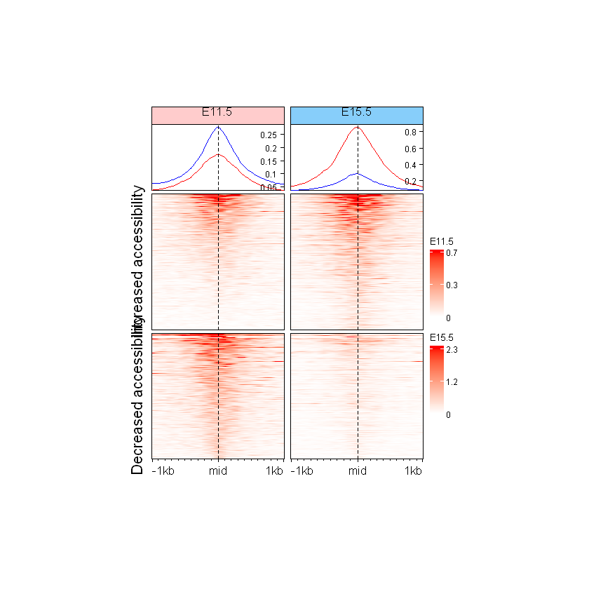
By default, ComplexHeatmap appoints the first heatmap in the list as the “Main Heatmap”. Because eh_11h is the Main Heatmap here, it calculates the row order based on its signal intensity, and eh_15h is automatically forced to obey that exact order.
First, we will use our new make_EH() function to generate the heatmaps for both our E11.5 and E15.5 samples. Notice that we are intentionally leaving out the split_rows argument (letting it default to NULL). By removing this split, the heatmaps will initially generate as simple, continuous blocks rather than breaking into separate clusters.
Next, we want to label which peaks belong to which cluster. To make this visually intuitive, we will build a tiny, 3-millimeter wide “mini-heatmap” to act as a colored side-bar, making sure to reuse our exact cluster_colors palette to maintain visual consistency.
Finally, we can glue our samples and this new color bar together into a single figure. But how do we get our biological clusters back? Instead of trying to split each heatmap individually (which can cause frustrating alignment errors), we use a function of the ComplexHeatmap package: the draw() function. By passing our split_change groups directly into draw(), it acts as a global master controller, seamlessly splitting the entire combined figure in one shot.
eh_11h <- make_EH(
norm_mat = mat_AS$ATAC_11half,
# split_rows = NULL,
hm_name = "E11.5")
eh_15h <- make_EH(
norm_mat = mat_AS$ATAC_15half,
hm_name = "E15.5",
col_fill = "#e6fff2")
row_order_eh <- row_order(eh_11h)
anno_hm <- Heatmap(
split_change,
# col = c("red", "blue"),
col = cluster_colors, # key-to-value color mapping
name = "Change",
show_row_names = FALSE,
show_column_names = FALSE,
width = unit(3, "mm"),
height = unit(8, "cm"),
row_order = row_order_eh,
# row_title_gp = gpar(fontsize = 0), # still showing 1-px text
row_title = NULL
)Warning message:
"The heatmap has not been initialized. You might have different results
if you repeatedly execute this function, e.g. when row_km/column_km was
set. It is more suggested to do as `ht = draw(ht); row_order(ht)`."Because our side-bar annotation represents discrete values (a peak is strictly either “Increased” or “Decreased”), we must be careful about how we assign colors. Rather than passing a simple list of colors like c("red", "blue"), we pass our cluster_colors variable, which is a named vector (a dictionary).
According to the official ComplexHeatmap documentation:
“If the matrix contains discrete values (either numeric or character), colors should be specified as a named vector to make it possible for the mapping from discrete values to colors. If there is no name for the color vector, the order of colors corresponds to the order of
unique(mat).”
By using our named vector, we mathematically lock the exact text keys to their specific colors, ensuring that “Increased” is always red and “Decreased” is always blue.
draw(
anno_hm + eh_11h + eh_15h,
split = split_change)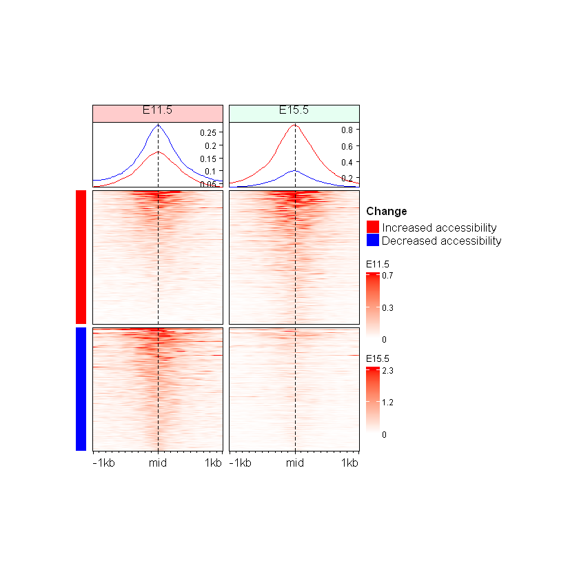
Standard Heatmap() always try to cluster (sort) their data by default. When we attached anno_hm to the plot, it started trying to sort the rows based on the text. By explicitly passing row_order_eh to the mini-heatmap, we “locked” it, forcing it to stop trying to sort itself and to just perfectly mirror the Main Heatmap, i.e. eh_11h.
Note that we can also just pass cluster_rows = FALSE into anno_hm and remove row_order = row_order_eh, and then use draw(anno_hm + eh_11h + eh_15h, main_heatmap = "E11.5"), or use rowAnnotation() instead (discussed at the end of the notebook) to achieve the exact same result.
Can you make split the Enriched Heatmap based on the annotations?
Hint: mid_peaks$ATAC_anno contain annotations for the regions.
mid_peaksGRanges object with 1933 ranges and 18 metadata columns:
seqnames ranges strand | ATAC_annotation ATAC_geneChr
<Rle> <IRanges> <Rle> | <character> <integer>
peak_1 chr1 3671606 * | Promoter (<=1kb) 1
peak_2 chr1 4332610 * | Intron (ENSMUST00000.. 1
peak_3 chr1 4492164 * | Promoter (1-2kb) 1
peak_4 chr1 4571804 * | Distal Intergenic 1
peak_5 chr1 4785693 * | Promoter (<=1kb) 1
... ... ... ... . ... ...
peak_1929 chr2 181713883 * | Promoter (<=1kb) 2
peak_1930 chr2 181715203 * | Promoter (<=1kb) 2
peak_1931 chr2 181763479 * | Promoter (<=1kb) 2
peak_1932 chr2 181764777 * | Promoter (1-2kb) 2
peak_1933 chr2 181837949 * | Promoter (<=1kb) 2
ATAC_geneStart ATAC_geneEnd ATAC_geneLength ATAC_geneStrand
<integer> <integer> <integer> <integer>
peak_1 3214482 3671498 457017 2
peak_2 4344146 4360314 16169 2
peak_3 4492465 4493735 1271 2
peak_4 4491390 4497354 5965 2
peak_5 4773206 4785710 12505 2
... ... ... ... ...
peak_1929 181715016 181720985 5970 1
peak_1930 181715016 181720985 5970 1
peak_1931 181763332 181827797 64466 1
peak_1932 181763332 181827797 64466 1
peak_1933 181837854 181857461 19608 1
ATAC_geneId ATAC_transcriptId ATAC_distanceToTSS
<character> <character> <numeric>
peak_1 497097 ENSMUST00000070533.4 0
peak_2 19888 ENSMUST00000027032.5 27604
peak_3 20671 ENSMUST00000191939.1 1162
peak_4 20671 ENSMUST00000192650.5 -73832
peak_5 27395 ENSMUST00000130201.7 0
... ... ... ...
peak_1929 18389 ENSMUST00000071585.9 -882
peak_1930 18389 ENSMUST00000071585.9 0
peak_1931 17932 ENSMUST00000081125.10 0
peak_1932 17932 ENSMUST00000081125.10 1332
peak_1933 245867 ENSMUST00000029116.13 0
ATAC_ENSEMBL ATAC_SYMBOL ATAC_GENENAME ATAC_anno
<character> <character> <character> <character>
peak_1 ENSMUSG00000051951 Xkr4 X-linked Kx blood gr.. Promoter
peak_2 ENSMUSG00000025900 Rp1 retinitis pigmentosa.. Intron
peak_3 ENSMUSG00000025902 Sox17 SRY (sex determining.. Promoter
peak_4 ENSMUSG00000025902 Sox17 SRY (sex determining.. Intergenic
peak_5 ENSMUSG00000033845 Mrpl15 mitochondrial riboso.. Promoter
... ... ... ... ...
peak_1929 ENSMUSG00000027584 Oprl1 opioid receptor-like 1 Promoter
peak_1930 ENSMUSG00000027584 Oprl1 opioid receptor-like 1 Promoter
peak_1931 ENSMUSG00000010505 Myt1 myelin transcription.. Promoter
peak_1932 ENSMUSG00000010505 Myt1 myelin transcription.. Promoter
peak_1933 ENSMUSG00000027589 Pcmtd2 protein-L-isoasparta.. Promoter
ATAC_logFC ATAC_logCPM ATAC_F ATAC_PValue ATAC_qvalue
<numeric> <numeric> <numeric> <numeric> <numeric>
peak_1 0.602984 10.45378 41.78446 6.58453e-08 4.81983e-07
peak_2 0.855748 5.18424 3.68371 6.13517e-02 9.28785e-02
peak_3 -0.620926 7.13469 9.14522 4.12368e-03 8.38540e-03
peak_4 -0.511046 8.90885 15.15688 3.27158e-04 8.67115e-04
peak_5 0.540908 8.63469 15.08892 3.36058e-04 8.82634e-04
... ... ... ... ... ...
peak_1929 1.922716 6.37607 40.6570 8.88771e-08 6.28500e-07
peak_1930 1.213349 7.47748 37.2944 2.22741e-07 1.40677e-06
peak_1931 -2.192918 7.94745 146.4501 1.07660e-15 1.40573e-13
peak_1932 -1.275275 5.54135 10.4487 2.30922e-03 4.97558e-03
peak_1933 0.689247 7.92175 16.6788 1.81039e-04 5.14680e-04
-------
seqinfo: 21 sequences from an unspecified genome; no seqlengthshead(mid_peaks$ATAC_anno, 10)# Extract the genomic annotations (e.g., "Promoter", "Intron", "Intergenic")
# from the peak metadata and save it as a standalone vector.
split_anno <- mid_peaks$ATAC_anno
# Attach the original peak IDs as names to this new vector.
# This ensures every annotation label stays permanently linked to its peak
names(split_anno) <- names(mid_peaks)
head(split_anno)Instead of building a new dataframe from scratch, we may simply extract the GRanges object’s metadata table (mcols) as a standard dataframe and slice out the exact column we want. Because we are slicing the existing table, R automatically brings the peak IDs along as our row names.
Note: mcols() returns a DataFrame (with a capital D and F), which is a highly complex, specialized object built by Bioconductor to hold biological data types (like raw DNA sequences) that a normal table cannot hold. However, visualization packages expect R’s standard, universally accepted data.frame. Therefore, we must use as.data.frame() here to safely convert our heavy genomic object into a lightweight table that the heatmap can easily understand.
# Extract the metadata as a dataframe, and slice the specific column
# (drop = FALSE ensures it stays a 2D dataframe instead of collapsing)
split_anno_df <- as.data.frame(
mcols(mid_peaks))[, "ATAC_anno", drop = FALSE]
head(split_anno_df)| ATAC_anno | |
|---|---|
| <chr> | |
| peak_1 | Promoter |
| peak_2 | Intron |
| peak_3 | Promoter |
| peak_4 | Intergenic |
| peak_5 | Promoter |
| peak_6 | Intergenic |
However, in base R, when we pull a column out of a data frame or a GRanges object (split_anno_df$ATAC_anno), R stubbornly strips off the row names and just hands us a flat, nameless vector. To build a “Series” in base R, we have to manually map the index back onto the vector…
head(split_anno_df$ATAC_anno)# Dynamically generate a distinct color palette for all the distinct categories
anno_colors <- RColorBrewer::brewer.pal(n = length(unique(split_anno)), name = "Set1")
names(anno_colors) <- sort(unique(split_anno))
anno_an <- Heatmap(
split_anno,
col = anno_colors,
name = "anno",
show_row_names = FALSE,
show_column_names = FALSE,
width = unit(3, "mm"),
height = unit(8, "cm"),
cluster_rows = FALSE,
row_title = NULL
)draw(anno_an + eh_11h + eh_15h, split = split_anno, main_heatmap = "E11.5")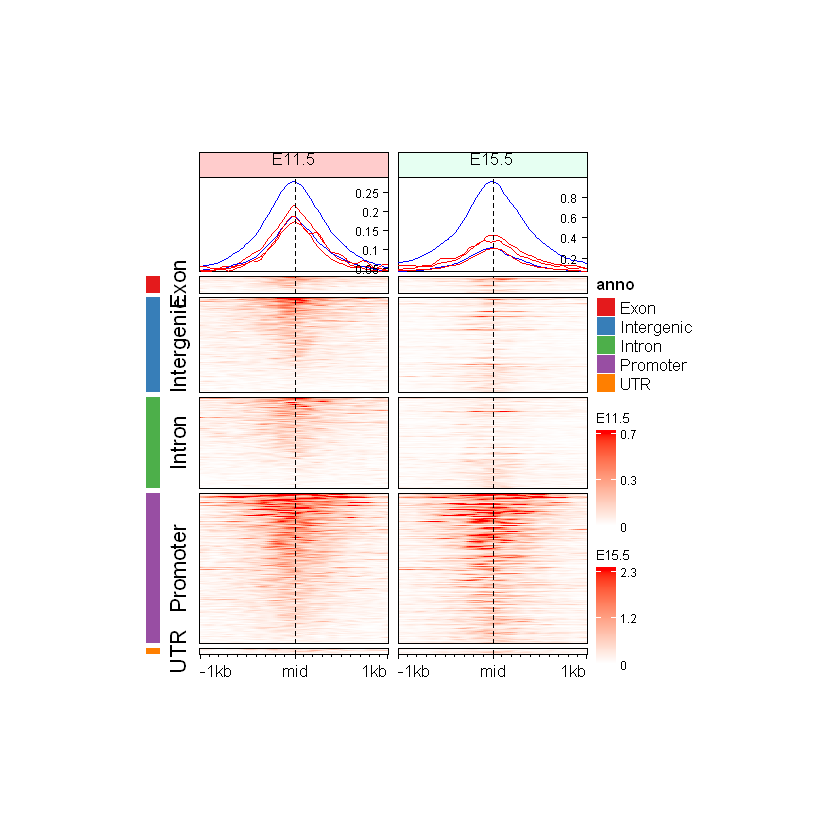
If we look closely at the summary profile at the top of our previous heatmaps, it only displayed two lines (Red and Blue), which perfectly represented the aggregate signal for our “Increased” and “Decreased” clusters.
However, by splitting our heatmap by Direction and/or Genomic Region, we create multiple distinct sub-clusters. Consequently, the top anno_enriched() profile will now attempt to calculate and display overlapping lines for every specific sub-cluster combination.
Because our make_EH() function explicitly passes gp = gpar(col = cluster_colors) to the top annotation, EnrichedHeatmap will be forced to recycle colors, trying to draw many lines using only our two predefined colors. To fix this, we will update our custom function to make the line_colors argument optional (defaulting to NULL). This gives us the flexibility to dynamically pass a custom colormap that perfectly matches the exact number of clusters we are analyzing.
Additionally, we must address a frustrating quirk in how the package handles text labels. When we pass our split_anno_df to the global draw() function, it automatically generates text labels for every single cluster combination. It then forcefully hands these text labels down to our Main Heatmap (eh_11h) and tells it to print them.
Putting row_title = NULL inside draw() only hides the global title for the entire figure; it does nothing to hide these individual slice titles. To truly remove this text clutter and let our color bars do the talking, we must tell the heatmap object itself to reject them. We will do this by adding row_title = NULL directly into our make_EH() function, and then we will quickly regenerate our heatmaps.
# Upgraded version of the original custom function
make_EH2 <- function(
norm_mat,
hm_name,
split_rows = NULL,
heatmap_cols = c("white", "red"),
col_fill = "#ffcccc",
line_colors = NULL # make it optional for more flexible splits
) {
# Define color scale based on 1st and 99th percentiles
col_fun <- colorRamp2(
quantile(norm_mat, c(0.01, 0.99)),
heatmap_cols)
# Calculate ticks for the legend
vmin <- as.numeric(quantile(norm_mat, c(0.01)))
vmax <- as.numeric(quantile(norm_mat, c(0.99)))
vmid <- (vmin + vmax) / 2
legend_ticks <- c(vmin, vmid, vmax)
# Generate and return the heatmap
EnrichedHeatmap(
mat = norm_mat,
name = hm_name,
row_split = split_rows,
row_title = NULL, # remove cluster row text
col = col_fun,
width = unit(4, "cm"),
height = unit(8, "cm"),
column_title = hm_name,
column_title_gp = gpar(fontsize = 10, fill = col_fill),
axis_name = c("-1kb", "mid", "1kb"),
heatmap_legend_param = list(
at = legend_ticks,
labels = round(legend_ticks, digits = 1),
title_gp = gpar(fontsize = 8),
labels_gp = gpar(fontsize = 7)
),
top_annotation = HeatmapAnnotation(
lines = anno_enriched(
gp = gpar(col = line_colors),
height = unit(2, "cm"),
axis_param = list(
side = "right",
facing = "inside",
gp = gpar(
fontsize = 7,
lwd = 0.4
)
)
)
)
)
}# Create two new ComplexHeatmap objects with the updated custom function
eh_11h2 <- make_EH2(
norm_mat = mat_AS$ATAC_11half,
line_colors = anno_colors,
hm_name = "E11.5")
eh_15h2 <- make_EH2(
norm_mat = mat_AS$ATAC_15half,
line_colors = anno_colors,
hm_name = "E15.5",
col_fill = "#e6fff2")draw(anno_an + eh_11h2 + eh_15h2, split = split_anno, main_heatmap = "E11.5")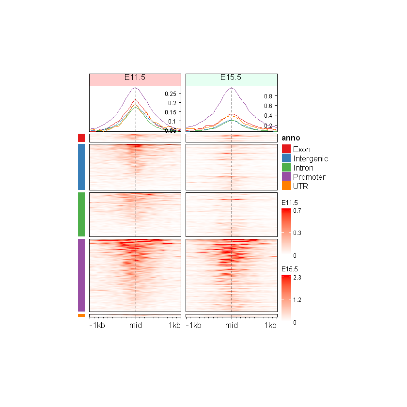
Can you make split the Enriched Heatmap based on the annotations and change in direction?
Hint: mid_peaks$ATAC_anno contain annotations for the regions. mid_peaks$ATAC_logFC contain sign of change.
split_anno_dir <- paste(
mid_peaks$ATAC_anno, ifelse(
mid_peaks$ATAC_logFC > 0,
yes = "Inc",
no = "Dec"))
# paste() destroys the factor() levels we built earlier. Moreover, we create 6 brand new
# categories ("Promoter Inc", "Promoter Dec", etc.). If we keep them separate, we can just
# stitch the two existing 3mm color bars side-by-side, as shown in the next question.
names(split_anno_dir) <- names(mid_peaks)
head(split_anno_dir)cols_an <- RColorBrewer::brewer.pal(
n = length(unique(split_anno_dir)),
name = "Paired")
# Create two new ComplexHeatmap objects with the updated custom function
eh_11h3 <- make_EH2(
norm_mat = mat_AS$ATAC_11half,
line_colors = cols_an,
hm_name = "E11.5")
eh_15h3 <- make_EH2(
norm_mat = mat_AS$ATAC_15half,
line_colors = cols_an,
hm_name = "E15.5",
col_fill = "#e6fff2")
anno_an_dir <- Heatmap(
split_anno_dir,
col = cols_an,
name = "anno",
show_row_names = FALSE,
show_column_names = FALSE,
width = unit(3, "mm"),
height = unit(8, "cm"),
row_order = row_order_eh,
row_title = NULL
)There are 10 unique colors in the vector `col` and 10 unique values in
`matrix`. `Heatmap()` will treat it as an exact discrete one-to-one
mapping. If this is not what you want, slightly change the number of
colors, e.g. by adding one more color or removing a color.
draw(anno_an_dir + eh_11h3 + eh_15h3, split = split_anno_dir)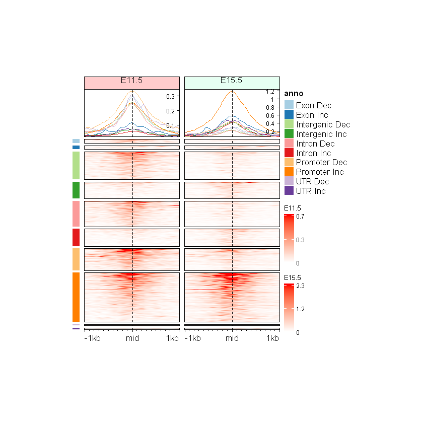
Can you make split the Enriched Heatmap based on the annotations and change in direction with separate color bars for annotation and direction of change?
To make this two-level split work while keeping our top profile lines colored strictly by Direction, we must generate brand new ATAC heatmap objects using the updated version of our custom function. Creating new objects allows us to pass the correct color dictionary and ensure no messy auto-generated slice text appears on the plot. Furthermore, we must explicitly set the main_heatmap argument inside our draw() function to prevent the mini-heatmaps from hijacking the layout and causing a sorting “tug-of-war.”
# Combine our two existing variables into a single data frame
split_anno_df <- data.frame(
Annotation = mid_peaks$ATAC_anno,
Direction = ifelse(mid_peaks$ATAC_logFC > 0, yes = "Inc", no = "Dec")
)
head(split_anno_df)| Annotation | Direction | |
|---|---|---|
| <chr> | <chr> | |
| 1 | Promoter | Inc |
| 2 | Intron | Inc |
| 3 | Promoter | Dec |
| 4 | Intergenic | Dec |
| 5 | Promoter | Inc |
| 6 | Intergenic | Dec |
annot_colors <- c(
"red", "blue", RColorBrewer::brewer.pal(
n = length(unique(split_anno_df$Annotation)), name = "Set1"))
names(annot_colors) <- c(unique(split_anno_df$Direction), unique(split_anno_df$Annotation))
annot_colors# Define cluster colors
cluster_colors_short <- c(
"Inc" = "red",
"Dec" = "blue")
# Another heatmaps with top line colored by Direction
eh_11h2_dir <- make_EH2(
norm_mat = mat_AS$ATAC_11half,
line_colors = cluster_colors_short,
hm_name = "E11.5")
eh_15h2_dir <- make_EH2(
norm_mat = mat_AS$ATAC_15half,
line_colors = cluster_colors_short,
hm_name = "E15.5",
col_fill = "#e6fff2")
anno_an_df <- Heatmap(
split_anno_df,
name = "anno",
col = annot_colors,
show_row_names = FALSE,
show_column_names = FALSE,
width = unit(3, "mm"),
height = unit(8, "cm"),
cluster_rows = FALSE,
row_title = NULL
)Warning message:
"The input is a data frame-like object, convert it to a matrix."
Warning message:
"Note: not all columns in the data frame are numeric. The data frame
will be converted into a character matrix."ht <- draw(
anno_an_df + eh_11h2_dir + eh_15h2_dir,
main_heatmap = "E11.5",
split = split_anno_df)
ht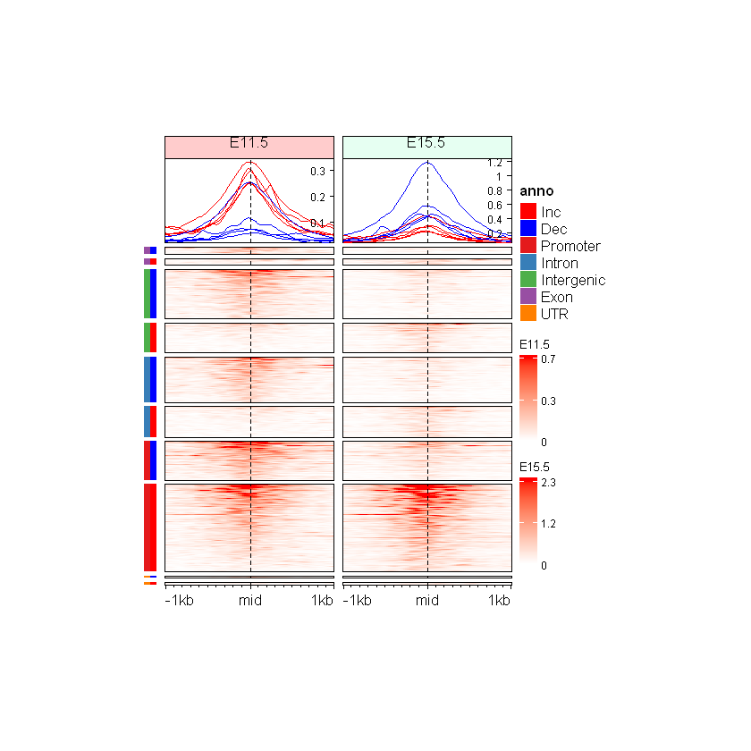
If we look closely at the E11.5 heatmap (left), the highest signal is clearly in the “Dec” (Blue) clusters. But the top profile draws those highest peaks in Red! Conversely, E15.5 has intense signal in the “Inc” (Red) clusters, but its top profile draws the highest peaks in Blue. It doesn’t correspond to the profiles observed in the previous plots.
Remember cluster_colors_short only contains two names (“Inc” and “Dec”). But because our final draw() function is going to split the heatmap by two variables (using the dataframe), the top profile is going to ask the dictionary for the color of the squashed string: "Inc, Promoter". Because "Inc, Promoter" is not inside cluster_colors_short, the heatmap blindly recycles the red and blue colors, scrambling the lines.
# Extract the exact slice names
print(names(row_order(ht))) [1] "Exon,Dec" "Exon,Inc" "Intergenic,Dec" "Intergenic,Inc"
[5] "Intron,Dec" "Intron,Inc" "Promoter,Dec" "Promoter,Inc"
[9] "UTR,Dec" "UTR,Inc" rowAnnotation methodInstead of forcing tiny heatmaps to act as labels, ComplexHeatmap provides a dedicated rowAnnotation() function. This is the cleanest, most professional way to annotate complex plots.
By passing our metadata as a data.frame along with a list of color dictionaries, the package handles the mapping for multiple variables simultaneously. Best of all, because it is structurally recognized as an “annotation” rather than a heatmap, it never fights for the Main Heatmap role. This keeps our code clean and guarantees our biological sorting remains perfectly intact.
Note: the visual order of the color bars is dictated entirely by the order of the columns inside the dataframe.
# Similarly using previously created vectors
split_anno_change_df <- data.frame(
Annotation = split_anno,
Change = split_change
)
head(split_anno_change_df)| Annotation | Change | |
|---|---|---|
| <chr> | <fct> | |
| peak_1 | Promoter | Increased accessibility |
| peak_2 | Intron | Increased accessibility |
| peak_3 | Promoter | Decreased accessibility |
| peak_4 | Intergenic | Decreased accessibility |
| peak_5 | Promoter | Increased accessibility |
| peak_6 | Intergenic | Decreased accessibility |
# Let ComplexHeatmap handle the mapping
my_annotations <- rowAnnotation(
df = split_anno_change_df,
col = list( # follow the order of the columns in the dataframe
Annotation = anno_colors,
Change = cluster_colors
),
show_annotation_name = FALSE
)We now pass the draw() function the split_anno_change_df dataframe with two columns. ComplexHeatmap goes row by row and groups the peaks by every unique combination of those two variables (e.g., all peaks that are both “Increased” AND “Promoter” get grouped together). It therefore preserves our biological sorting (factors), perfectly syncs with the Color Bars, and calculates the aggregate signal for the top anno_enriched() lines much more accurately.
However, because this multi-variable split generates new combined cluster names (like "Inc, Promoter"), our original 2-color dictionary is no longer sufficient. To prevent the top profile from blindly recycling colors, we still need to build a custom color dictionary that explicitly maps our red and blue colors to these exact combination strings!
# Generate the exact slice names that ComplexHeatmap will create
# (By default, ComplexHeatmap pastes dataframe columns together separated by ", ")
slice_names <- unique(
paste(split_anno_change_df$Annotation, split_anno_change_df$Change, sep = ", "))
# Build the TRUE, locked color dictionary
# If the slice name contains "Inc", it gets red. Otherwise, it gets blue.
true_line_colors <- ifelse(
grepl("Inc", slice_names), "red", "blue")
names(true_line_colors) <- slice_names
# Generate the heatmaps using the foolproof dictionary
eh_11h3_dir <- make_EH2(
norm_mat = mat_AS$ATAC_11half,
line_colors = true_line_colors,
hm_name = "E11.5"
)
eh_15h3_dir <- make_EH2(
norm_mat = mat_AS$ATAC_15half,
line_colors = true_line_colors,
hm_name = "E15.5",
col_fill = "#e6fff2"
)draw(
my_annotations + eh_11h3_dir + eh_15h3_dir,
split = split_anno_change_df)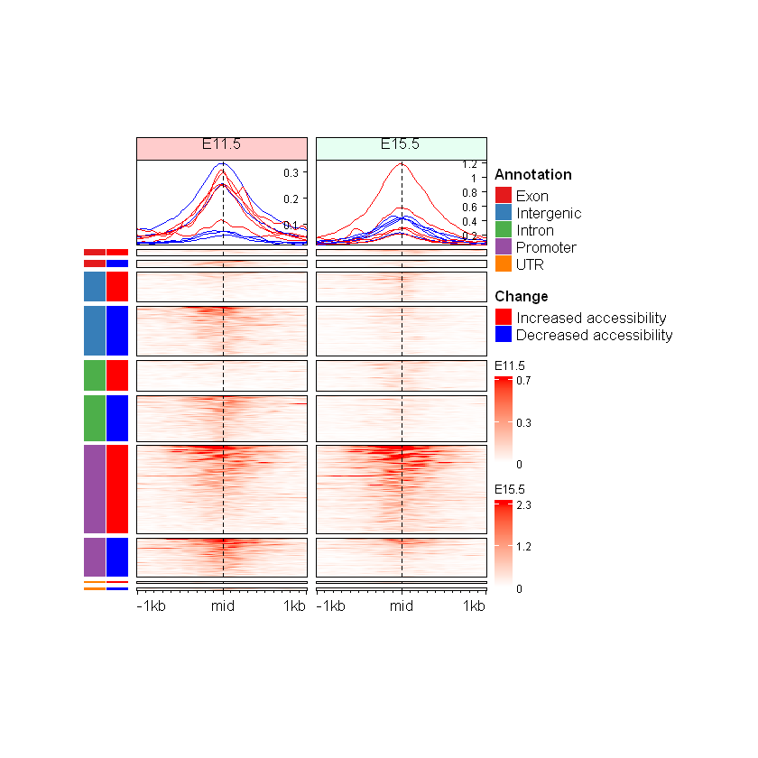
In our earlier attempts to add a color bar for the direction of change, we used what we can call the “Mini-Heatmap” hack. We created an entirely separate heatmap and forcefully squashed it into a tiny column by hardcoding width = unit(3, "mm") inside our code. Because we were forcing exact dimensions, we also had to tightly micromanage the global Jupyter canvas size just to make everything fit.
However, as we just saw, utilizing ComplexHeatmap’s native rowAnnotation() function changes everything. rowAnnotation() is specifically designed for this exact purpose. It natively understands how to size itself, how to align with the main heatmap rows, and how to format its own legends without us having to write hacky dimensional constraints.
What does this mean for our code moving forward? It means we can go back to our custom make_EH() function and remove the hardcoded width and height definitions entirely. By letting rowAnnotation() handle the side-bars, and letting ComplexHeatmap’s layout engine dynamically calculate the sizes of the main plotting areas, our code becomes significantly more flexible. Instead of rigid, hardcoded plots, we now have a highly adaptable pipeline that will automatically scale and look beautiful, whether we are plotting a tiny subset of 100 peaks or a massive multi-omics integration of 50,000 regions.